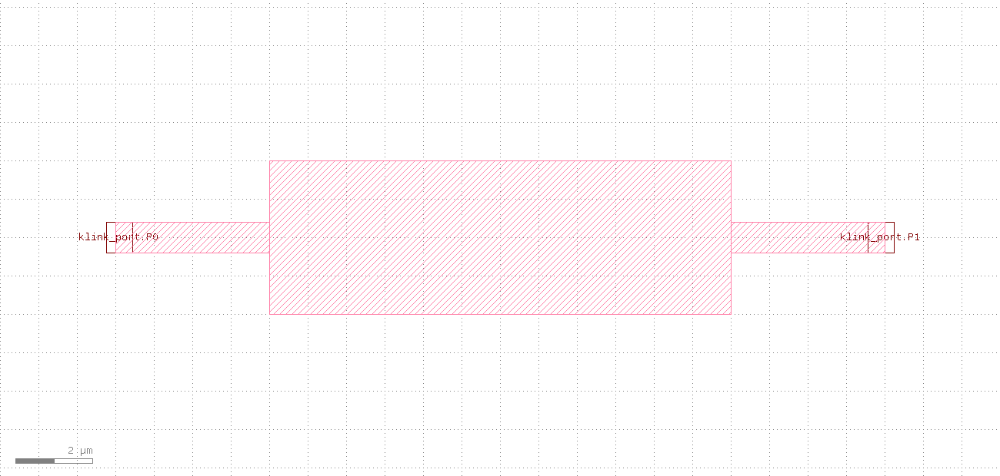
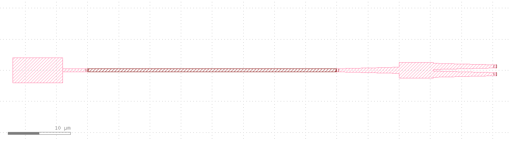
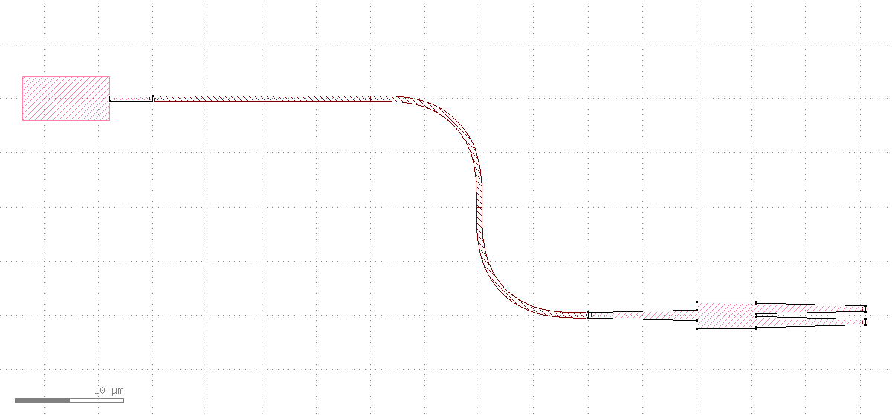

对话实战 · photonics
对话实战：标端口 → 连线 → 拖动重连
三句话，把一个自定义硅光器件接上一个 gdsfactory MMI，再拖动、重连。
这是一段真实对话记录。针对每一句用户请求，klink 的 AI agent 真的调用了列出的工具、在实时 KLayout 里跑出结果——每步截图就是当时的真实画面。想看含"手绘端口三种方式 + 反面教材"的完整版，看 gdsfactory 端口图文教程。
用户
我画了个自定义器件，在两个波导口上各画了个三角形，帮我转成标准端口。
klink agent
手绘三角形就是端口标记：尖端指朝向、底边等于宽度。一次调用读几何、推出朝向/宽度/位置，转成标准 klink Port，再删掉原三角形。两个口都转成了 0.8 µm 宽的贴边端口。
recognize_handdrawn_ports(cell="GFPORTS", layer="999/99", port_type="optical")
→ P0 orient=180° width=0.8 ; P1 orient=0° width=0.8 (attached=True)

P0 / P1，宽度精确 0.8 µm）。用户
把它连到右边那个 MMI 的输入口。
klink agent
器件的 P0 和 MMI 的输入 o1 都在 net link0 上、正好相对，直接布一条波导连上，写回 12/0 层。ok=true，一条 40 µm 直波导，0 交叉。
route_gdsfactory_ports(cell="GFLOOP", route_layer="12/0", all_two_port_nets=True)
→ {ok:true, MMI.o1 → P0, length_um:40, crossings:0}

用户
我把左边器件往上挪了 20 µm，重新连一下。
klink agent
同一个布线调用重跑一次——它从活的端口位置重新读（P0 已经在新坐标），把旧布线换成一条跟到新位置的波导。器件挪了，线跟上了，一条平滑 S 弯，其它什么都没动。
route_gdsfactory_ports(cell="GFLOOP", route_layer="12/0", all_two_port_nets=True)
→ {ok:true, MMI.o1 → P0(新位置), length_um:60} # 直线 40µm → S 弯 60µm

这段对话做了什么
三句话：手绘三角形转标准端口 → 连到 MMI → 拖动后重连。核心是"标端口 → 布线 → 拖动 → 重连"的闭环，判断成没成看的是结构化返回（width=0.8、length 40→60、crossings=0），不是"看起来连上了"。
诚实复述：以上三轮都是本次会话在一个一次性 KLayout tab 里实跑的，几何是现场决定的合成数值（非任何真实工艺），调用的工具名与上面
.chat-calls 完全一致。完整版（含标准 gdsfactory 自动端口、PDK 黑箱 harvest、以及"底边画错"的反面教材）见 gdsfactory 端口图文教程。